Berkolaborasi dengan Akal Imitasi
Pengantar AI Fluency untuk Mahasiswa Magister Psikologi
2026-08-19
Outline
- Apa sebenarnya akal imitasi? — dari model statistik ke agentic dan embodied AI
- Bagaimana user menggunakan AI? — bagaimana bukti dari riset empiris?
- Pengantar AI Fluency Framework — mengapa fluency menentukan kualitas output
- Delegation — menentukan tugas apa yang dapat dilakukan AI
- Description — berkomunikasi dengan AI
- Discernment — mengevaluasi output AI secara kritis
- Diligence — menggunakan AI secara bertanggung jawab
- Kesimpulan dan take-away message dari saya
Perlu diketahui
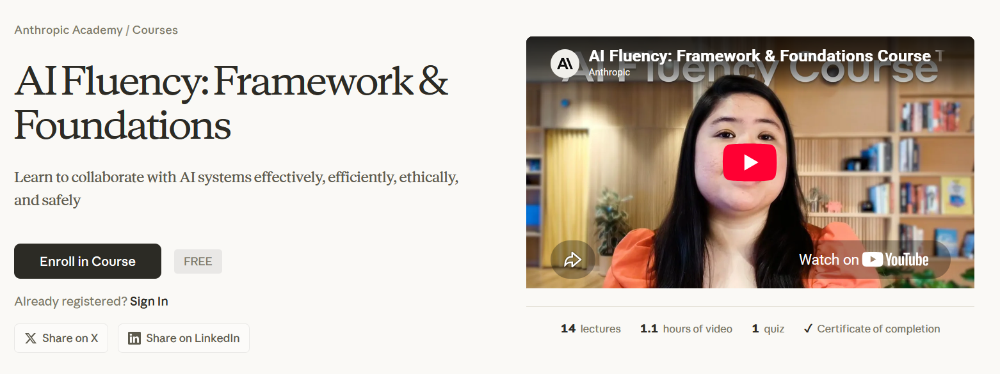
Mungkin kursus ini juga menarik?
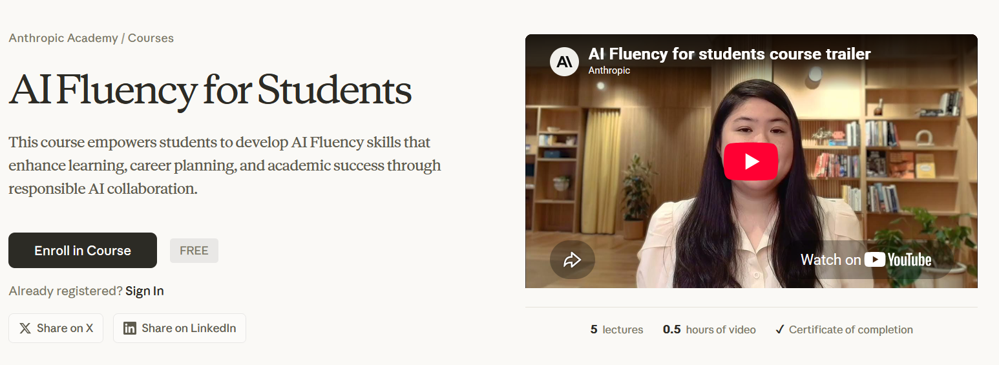
Sebelum mulai… 🙋♀️
Angkat tangan kalau dalam seminggu terakhir Anda:
- Menggunakan AI chatbot (e.g., ChatGPT, Claude, Gemini, Copilot, Kimi, DeepSeek, dll.) minimal sekali
- Menggunakannya untuk tugas-tugas yang berkaitan dengan perkuliahan atau pekerjaan
- Menggunakannya untuk urusan di luar kuliah dan pekerjaan (e.g., minta resep masakan, curhat, menyusun rencana liburan, dsb.)
- Pernah mendapati AI memberikan jawaban yang salah, tapi tone output teksnya sangat meyakinkan
Ingat-ingat jawaban Anda tadi
…nanti kita cocokkan dengan data penggunaan AI secara global.
Apa Sebenarnya Akal Imitasi? 🤖
Artificial intelligence a.k.a “akal imitasi”
- Banyak orang menerjemahkan artificial intelligence sebagai “kecerdasan buatan” dalam Bahasa Indonesia, dan akibatnya, publik menganggap seolah-olah AI benar-benar cerdas
- Padahal AI chatbot adalah model statistik dengan output teks (“large language model”) yang meniru proses dan produk kognisi manusia (“bahasa natural”)
- Frasa akal imitasi mengingatkan kita pada dua hal sekaligus:
- Kemampuan large language model (LLM) terasa natural seperti manusia karena kualitas teks outputnya memang sangat meyakinkan
- Tapi ia bukan manusia, sehingga tidak punya pemahaman, niat, apalagi tanggung jawab
- Konsekuensinya: yang bertanggung jawab atas output teks AI adalah kita sebagai penggunanya
AI tidak ujug-ujug diciptakan
- 1950-an–1980-an — AI simbolik: manusia menuliskan aturan logikanya satu per satu (expert systems)
- 1990-an–2000-an — machine learning: mesin belajar pola dari data, bukan lagi dari aturan eksplisit (e.g., spam filter)
- 2010-an — deep learning yang merupakan permodelan bahasa yang meniru cara kerja jaringan saraf manusia; terobosan besar dalam rekognisi gambar dan suara (natural language processing, NLP)
- 2017 — arsitektur transformer diperkenalkan, yang merupakan fondasi semua LLM modern
- 2022 — OpenAI merilis GPT-3.5; generative AI menjadi fenomena massal
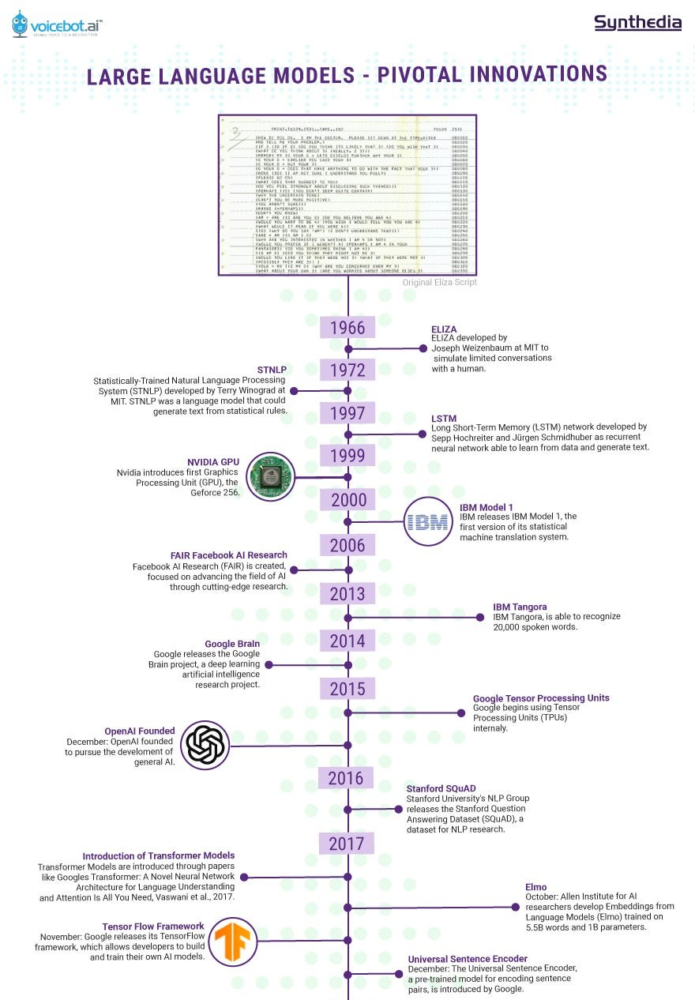
{kind=link}
Model Statistik di Balik Layar
Large language model (LLM) pada intinya adalah model statistik raksasa dengan output teks yang menjawab satu pertanyaan:
“Dari semua input kata sejauh konteks percakapan ini, kata apa yang paling mungkin muncul berikutnya?”
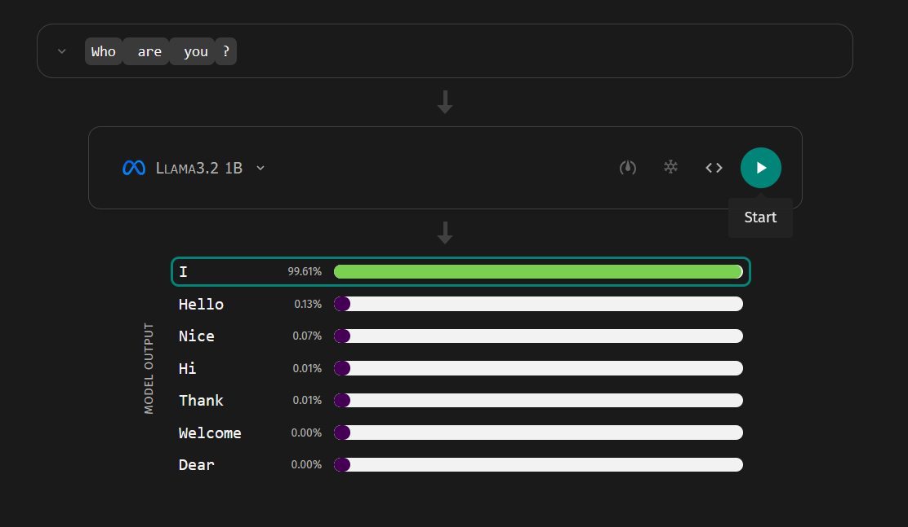
Klik di sini ➡️ AnimatedLLM
Transformer dan mekanisme attention
Terobosannya adalah mekanisme attention: setiap kata bisa “memperhatikan” konteks dari semua kata lain dalam konteks untuk menentukan maknanya.
- “Bisa ular itu amat mematikan” vs. “Saya bisa datang besok”
- “Bisa” adalah kata yang sama, makna berbeda (i.e., “homonim”)
- Model bahasa generasi sebelumnya membaca kata satu per satu secara berurutan; transformer memproses seluruh kalimat sekaligus, secara paralel
- Paralelisme inilah yang memungkinkan training dengan data yang jauh lebih besar (e.g., Kimi 3 dengan 2.8 trilyun parameter)
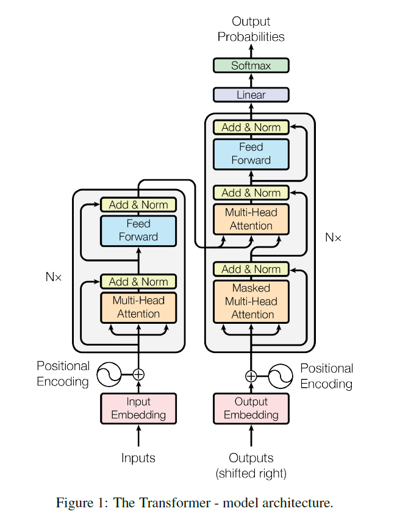
Bagaimana LLM “dibesarkan”?
2️⃣ tahap utama:
- Pre-training — model membaca miliaran dokumen dan belajar memprediksi kata berikutnya
- Hasilnya: base model yang menguasai pola bahasa, pengetahuan umum, bahkan penalaran, tapi belum bisa menjadi “asisten”
- Fine-tuning (termasuk reinforcement learning from human feedback, RLHF) — model dilatih mengikuti instruksi, menjawab dengan sopan, dan menolak permintaan tidak patut bahkan berbahaya
- Hasilnya: Chatbot seperti ChatGPT, DeepSeek, atau Claude yang Anda kenal sekarang
Analogi proses psikologisnya
Pre-training ≈ pemerolehan bahasa dan pengetahuan; fine-tuning ≈ sosialisasi — belajar norma tentang bagaimana menggunakan kemampuan itu.
Optimasi LLM
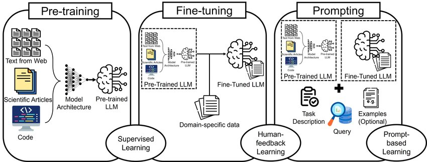
Sumber: Ghali, et al. (2024)
Kemampuan AI meningkat drastis karena…
- Arsitektur — model transformer (2017) yang bisa diskalakan
- Data — teks digital dalam volume luar biasa besar di internet (sekian trilyun parameter)
- Hardware/Komputasi — GPU dan investasi besar-besaran pada AI data center
Emergent capabilities
Gabungan ketiganya memunculkan fenomena menarik, yaitu emergent capabilities kemampuan yang muncul begitu saja setelah model melewati ukuran tertentu, tanpa pernah diprogram secara eksplisit (menerjemahkan, menulis kode, penalaran berantai…)
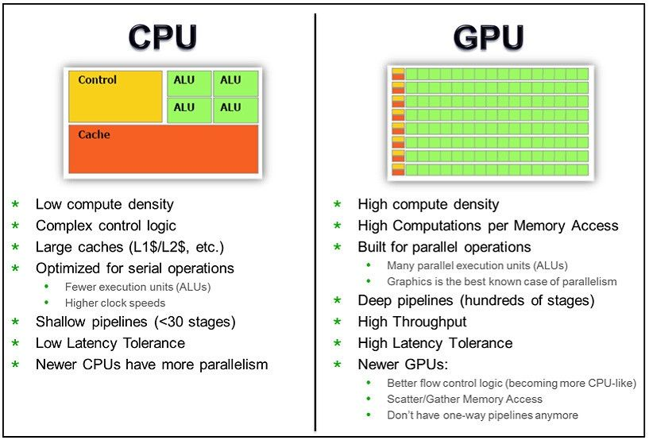
Dari chatbot ke agentic dan embodied AI
Empat tahap perkembangannya:
- Chatbot — merespons pesan Anda satu per satu (ChatGPT-3.5, 2022)
- Reasoning models — “berpikir” langkah demi langkah dulu sebelum menjawab (e.g., model-model “frontier” seperti Opus 5, Kimi 3, GPT-5.6 Sol, Fable 5, etc.)
- AI agent — merencanakan dan mengeksekusi tugas multi-langkah secara mandiri atas nama penggunanya, misalnya menjelajah web, memakai aplikasi, menulis dan menjalankan kode pemrograman Yang et al. (2025)
- Embodied AI — akal imitasi yang diberi “tubuh”: robot yang “ditanam” LLM
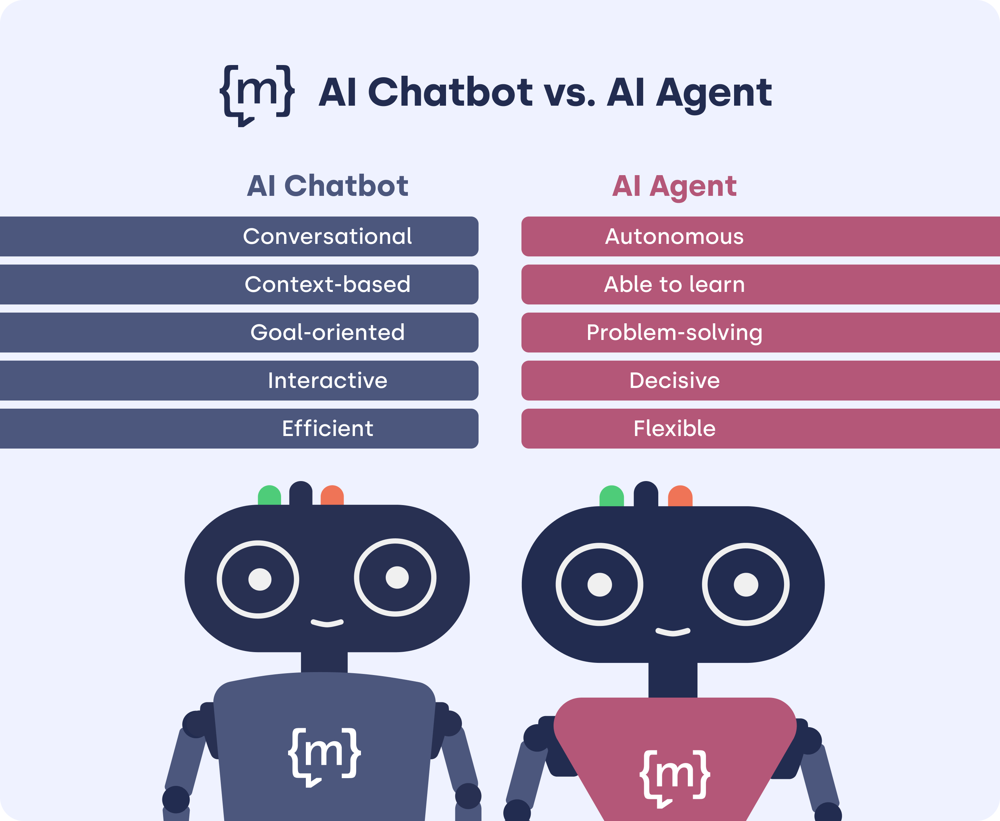
Embodied AI
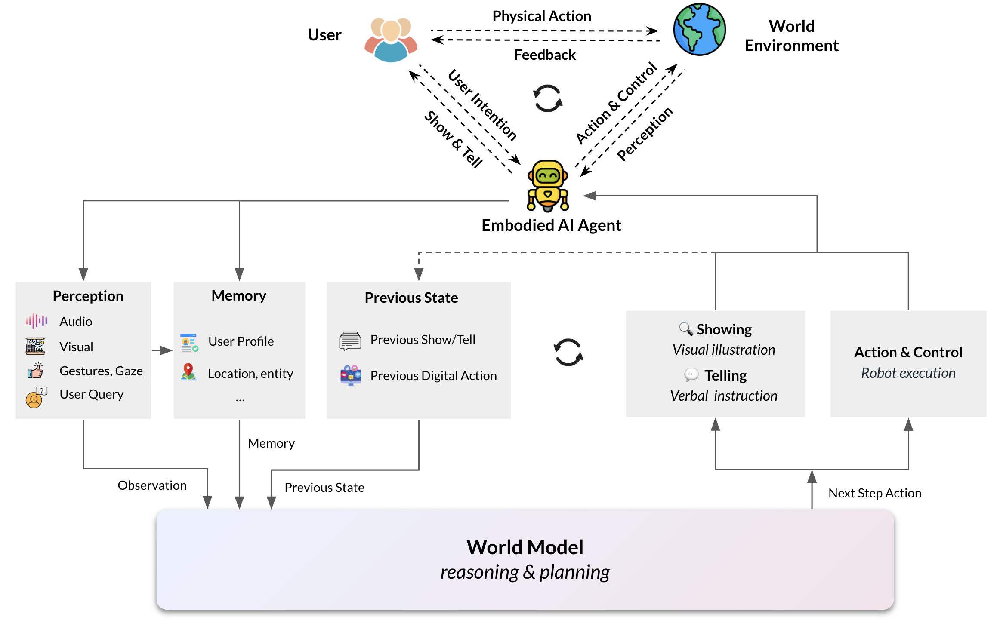
Apa keterbatasan AI?
- Halusinasi — menghasilkan output yang salah secara faktual, tetapi dengan tone yang sangat meyakinkan, termasuk mengarang referensi ilmiah
- Knowledge cutoff — pengetahuannya berhenti di tanggal tertentu; kejadian terbaru tidak diketahuinya, kecuali dilengkapi fitur pencarian web
- Context window terbatas — working memory-nya bisa penuh; percakapan dan dokumen yang sangat panjang terpaksa terpotong, tidak selesai diproses
- Penalaran yang rapuh — LLM bisa memberikan jawaban yang sama sekali berbeda ketika promptnya diubah sedikit saja dari pola data trainingnya
- Sycophancy — cenderung memberikan jawaban yang menyenangkan user, alih-alih mengoreksi kesalahan yang dilakukan oleh user
Untuk Apa AI Digunakan? 📊
Adopsi teknologi tercepat dalam sejarah
Chatterji et al. (2025), penggunaan ChatGPT dalam skala besar:
- Juli 2025: ±700 juta pengguna mingguan ≈ 10% populasi dewasa dunia, dengan 18 miliar pesan per minggu
- Kesenjangan gender pengguna awal (didominasi laki-laki) menyempit drastis
- Pertumbuhan justru lebih tinggi di negara berpendapatan rendah
Kemampuan berkolaborasi dengan AI menjadi keterampilan esensial
Konsekuensinya, kemampuan berkolaborasi dengan AI akan menjadi keterampilan dasar, seperti halnya literasi digital.
Untuk apa orang menggunakannya?
Temuan dari Chatterji et al. (2025):
- Penggunaan non-pekerjaan tumbuh lebih cepat daripada penggunaan AI untuk pekerjaan: dari 53% (2024) menjadi >70% (2025) dari seluruh pesan
- Hampir 80% percakapan masuk ke tiga kategori besar:
- Practical guidance — tutoring, saran how-to, brainstorming ide (kategori terbesar)
- Seeking information — menggantikan mesin pencari
- Writing — menulis dan menyunting; 40% dari pesan terkait pekerjaan
- Menariknya: ⅔ pesan pada tugas writing meminta AI mengolah teks penggunanya (menyunting, mengkritik, menerjemahkan), bukan benar-benar menulis dari nol
- Value utamanya adalah decision support
- AI sebagai teman berpikir untuk pekerjaan yang berkaitan dengan produksi pengetahuan
Tren terbaru: penggunaan AI agent
Yang et al. (2025) melakukan field study pertama tentang AI agent (Comet Assistant, Perplexity):
- Dua topik terbesar: productivity & workflow dan learning & research — 57% dari seluruh query
- Konteks penggunaan: 55% personal, 30% profesional, 16% pendidikan
- Early adopters-nya: pekerja sektor digital dan padat pengetahuan, termasuk akademisi
- Seiring waktu, pengguna bergeser ke tugas-tugas yang membutuhkan kapasitas kognitif yang lebih besar
Belajar sekarang, sebelum terlambat
Pesan saya untuk Anda sebagai mahasiswa magister psikologi:
- AI sudah menjadi bagian dari infrastruktur aktivitas akademik. Fokusnya saat ini adalah belajar bagaimana caranya menggunakan AI
- Oleh karena itu, menggunakan AI dengan efektif, efisien, etis, dan aman harus dipelajari dan diusahakan dengan sungguh-sungguh
- Keterampilan berkolaborasi dengan AI harus dipelajari mulai sekarang, sebelum menggunakan AI semakin kompleks dan mahal
AI digunakan dalam riset psikologi
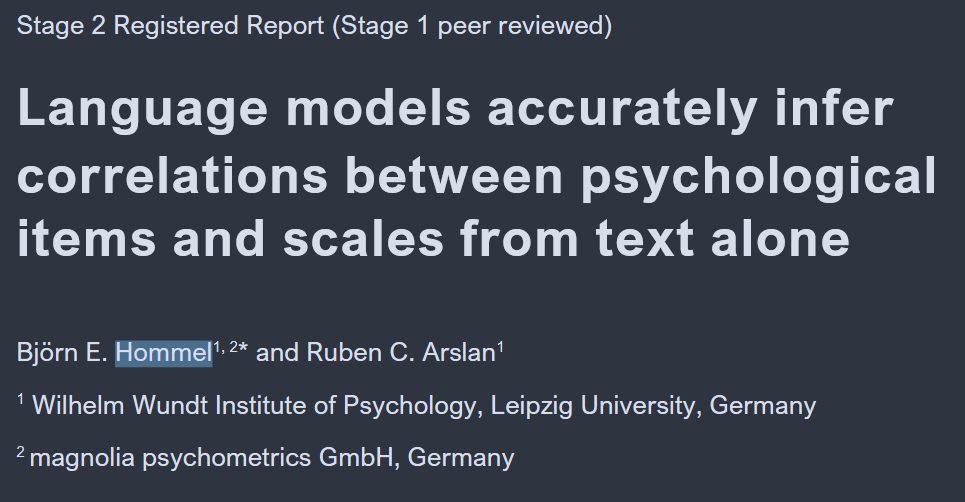
AI digunakan dalam riset psikologi
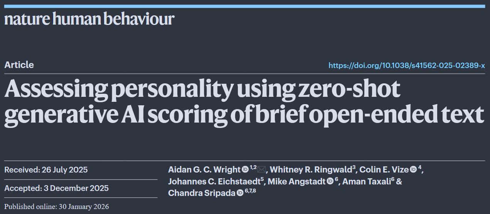
AI digunakan dalam riset psikologi
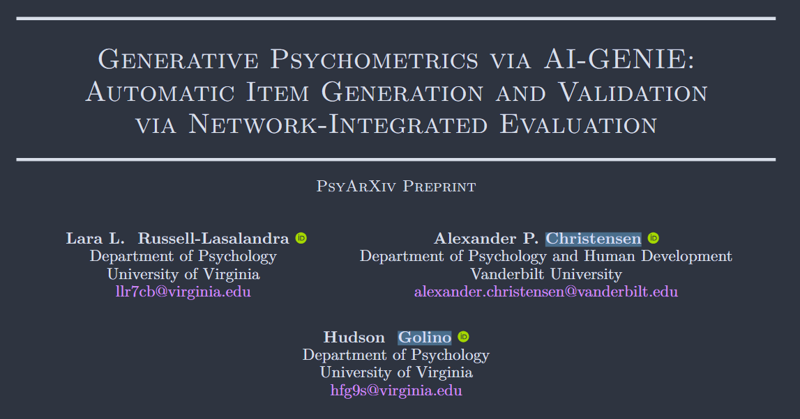
Pengantar AI Fluency Framework 🧭
AI literacy vs. AI fluency
Rogers & Carbonaro (2025) membedakan dua jenjang kompetensi:
AI literacy
- Memahami cara kerja AI
- Mengevaluasi teknologi AI
- Tahu risiko dan batasannya
AI fluency
- Berkarya dan berinovasi dengan AI
- Memecahkan masalah bersama AI
- Mengelola penggunaannya secara etis
Analoginya seperti belajar bahasa: literacy = bisa membaca; fluency = bisa berbincang dengan lancar.
Bagian awal presentasi tadi fokusnya adalah literacy; sisa sesi ini berikutnya akan membahas tentang fluency.
Definisi AI fluency
Kemampuan berkolaborasi dengan AI secara efektif, efisien, etis, dan aman (Bent, Dakan, Feller, & Vo, 2026).
Mengapa fluency menentukan hasil?
Potts & Sudhof (2026) menganalisis 27 ribu transkrip percakapan manusia–AI:
- Pengguna yang fasih mengerjakan tugas yang jauh lebih kompleks (rata-rata 3,1 vs. 1,5 pada skala 5)
- Pengguna fasih bersikap augmentative dalam kolaborasi — berulang-ulang menyempurnakan, mempertajam tujuan, dan mengkritisi output
- Sebaliknya, pengguna pemula bersikap pasif — menerima begitu saja rencana dan jawaban AI
Paradoksnya: pengguna fasih justru mengalami lebih banyak kegagalan (i.e., menolak output AI), tapi kegagalan mereka visible, karena mereka aktif memeriksa, dan lebih sering berujung pada perbaikan output.
Kegagalan pemula justru invisible. Artinya, percakapan tampak sukses mendeliver output, padahal hasilnya meleset dan tidak koheren sama sekali.
Kesimpulannya
Fluency menentukan apakah AI di tangan Anda menjadi produsen AI slop atau asisten yang bisa diandalkan (tool).
3️⃣ mode kolaborasi dengan AI
Bent, Dakan, Feller, & Vo, 2026 mengidentifikasi tiga cara kita melibatkan AI:
- Automation — AI mengerjakan tugas spesifik sesuai instruksi Anda
- “Terjemahkan abstrak ini ke bahasa Indonesia”
- Augmentation — Anda dan AI berkolaborasi sebagai mitra berpikir
- “Ayo kita bedah kelemahan desain penelitian saya satu per satu”
- Agency — Anda mengonfigurasi AI untuk bekerja mandiri atas nama Anda
- “Setiap ada artikel baru tentang topik X, ringkas isinya dan kirimkan ringkasannya ke email saya setiap pagi”
Riset menunjukkan mode yang paling produktif untuk pekerja pengetahuan adalah augmentation, yaitu AI sebagai thought partner, bukan pengganti proses berpikir (Potts & Sudhof, 2026).
Automation vs. Agency
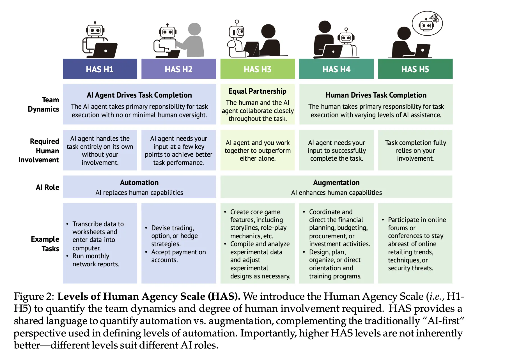
4️⃣D AI Fluency Framework
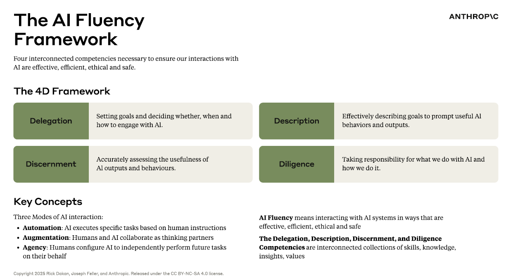
Catatan
Delegation dan description → efektif dan efisien; discernment dan diligence → etis dan aman. Hari ini kita mendalami tiga yang terakhir. Materi 4D diadaptasi dari kursus AI Fluency: Framework & Foundations, Bent, Dakan, Feller, & Vo, 2026.
Delegation secara singkat
Sebelum meminta chatbot melakukan sesuatu, tanyakan 3️⃣ hal ini pada diri Anda sendiri:
- Problem awareness — apa sebenarnya tujuan saya berkolaborasi dengan AI? Seperti apa output teks yang baik dan bisa saya terima?
- Platform awareness — AI (yang mana) bisa apa, dan apa yang ia tidak bisa lakukan?
- Task delegation — bagian mana yang butuh keahlian dan judgment saya; bagian mana yang bisa dikerjakan AI; bagian mana yang paling berdampak kalau dikerjakan bersama?
Contoh untuk tesis Anda:
| Tugas | Delegasi |
|---|---|
| Merumuskan pertanyaan penelitian | Anda (AI boleh menjadi mitra diskusi) |
| Memoles bahasa akademik naskah | AI, lalu Anda sunting |
| Menginterpretasi hasil analisis | AI dan Anda bersama-sama, AI menawarkan alternatif, Anda yang membuat keputusan akhir |
Description: Berkomunikasi dengan Jernih 🗣️
AI tidak bisa membaca pikiran Anda
Kualitas output AI sangat ditentukan oleh kualitas komunikasi Anda. Berikut ini adalah 3️⃣ komponen description:
- Product description — apa yang Anda inginkan: bentuk output, format, audiens, gaya, dst.
- Process description — bagaimana sebaiknya AI mengerjakannya: metode, kerangka, urutan langkah
- Performance description — bagaimana AI harus “bersikap” selama kolaborasi: ringkas atau rinci? Menantang atau suportif? Bertanya dulu atau langsung eksekusi?
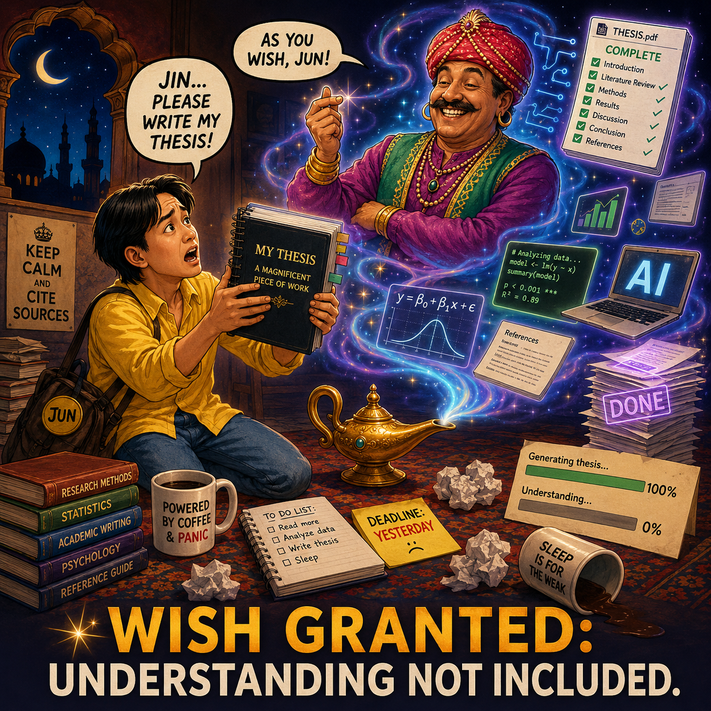
Ilustrasi dibuat dengan GPT-5.5
Perlakukan AI sebagai kolaborator, bukan “jin botol”🧞
Komunikasikan dan evaluasi output AI, meskipun Anda menolak output dari percakapan tersebut. Jelaskan mengapa output tersebut Anda tolak sehingga AI bisa menyesuaikan output berikutnya berdasarkan feedback Anda, sesuai prinsip reinforcement learning from human feedback (RLHF).
6️⃣ teknik prompt engineering
- Berikan konteks — apa yang Anda inginkan, untuk apa, dan latar belakang yang relevan
- Tunjukkan contoh — perlihatkan gaya atau format output yang Anda harapkan dari AI
- Tetapkan batasan — format, panjang, cakupan, dan apa yang tidak boleh
- Pecah tugas kompleks menjadi langkah-langkah kecil — pandu penalaran AI dalam mengerjakan tugas secara bertahap
- Minta AI berpikir dulu (planning mode) — beri ruang untuk menalar sebelum menjawab lalu beri feedback agar output semakin presisi
- Tentukan peran atau gaya bicaranya (persona) — misalnya sebagai dosen pembimbing yang teliti dan kritis, atau tutor yang sabar
🗝️ Tips: Anda bisa minta AI memperbaiki prompt Anda.
Contoh: “Sebelum menjawab, tolong sarankan dulu bagaimana permintaan dan instruksi ini bisa saya tulis dengan lebih jelas.”
Contoh prompt engineering yang efektif
Automation 😞
Buatkan tiga halaman tinjauan pustaka tentang depresi untuk tesis saya.Augmentation 😊
Kamu adalah asisten riset yang kritis dan teliti. Saya mahasiswa S2 psikologi yang sedang menyusun proposal tesis tentang depresi pada mahasiswa magister.
Bantu saya menyusun kerangka tinjauan pustaka (bukan isi lengkapnya):
1. Identifikasi 4-6 tema besar yang lazim dibahas dalam literatur
depresi (misalnya: pengukuran, prediktor, intervensi).
2. Untuk tiap tema, tuliskan 2-3 pertanyaan yang perlu dijawab
tinjauan pustaka saya.
3. Sarankan istilah pencarian (bahasa Inggris) untuk tiap tema.
Perhatikan batasan ini: jangan mengarang referensi yang tidak pernah ada. Kalau tidak yakin, terbuka saja bilang tidak yakin. Kalau konteks dari saya masih kurang detil,
berikan pertanyaan sebelum mulai tugasnya. Jangan selalu setuju pada argumen saya, Anda harus melakukan "Devil's advocate" ketika berinteraksi dengan saya.Discernment: Mengevaluasi Secara Kritis 🔍
Sisi lain dari percakapan
Discernment adalah cara Anda menilai output yang diberikan AI. Komponennya:
- Product discernment — menilai output-nya: akurat? Runtut? Sesuai kebutuhan dan audiens?
- Process discernment — menilai bagaimana cara AI membuat output: ada lompatan logika? Ada yang terlewat? Penalarannya keliru?
- Performance discernment — menilai gaya interaksi AI: apakah gaya interaksinya membantu, atau perlu diarahkan ulang?
Keduanya lalu membentuk feedback loop: describe → discern → perbaiki deskripsi → discern lagi… sampai hasilnya benar-benar sesuai dengan standar Anda.
Waspadai “kegagalan” yang tidak terlihat 👻
Ingat temuan Potts & Sudhof (2026):
- Kegagalan user pemula bersifat invisible — percakapan tampak sukses, penggunanya puas, padahal hasilnya tidak koheren sama sekali karena tidak pernah diperiksa secara kritis
- Dalam konteks akademik, invisible failure itu wujudnya: referensi fiktif di naskah Anda, salah baca hasil statistik, klaim teori yang keliru, yang baru ketahuan saat dibaca pembimbing atau reviewer
- User yang lebih fasih berkolaborasi dengan AI lebih sering menemukan kegagalan karena mereka aktif mencarinya
Bayangkan Anda sebagai detektif🕵️♀️
Bayangkan diri Anda sebagai detektif ketika memeriksa output AI. Menemukan kesalahan AI adalah bukti Anda menggunakannya dengan benar.
Domain expertise adalah aset
Discernment paling mudah dilakukan di ranah yang Anda kuasai:
- Anda tahu bedanya mediasi dan moderasi; Anda kenal instrumen-instrumen standar di bidang Anda; Anda bisa mendeteksi klaim kausal yang berlebihan
- Maka strategi yang masuk akal: gunakan AI lebih intens di ranah yang Anda kuasai (karena mudah Anda verifikasi), dan paling hati-hati di ranah yang baru (karena sulit Anda verifikasi)
- Untuk ranah yang baru: minta sumbernya, cek silang, atau konfrontasi: minta AI agent lain mengkritik output AI agent yang pertama
Ironisnya, justru godaan terbesar memakai AI adalah menggunakannya untuk hal-hal yang tidak kita pahami, persis di titik discernment kita paling lemah.
Menggunakan AI dan ancaman deskilling
- Cognitive offloading — “menitipkan” proses berpikir ke alat bantu.
- Ini proses yang lumrah dan umumnya sangat bermanfaat (Risko & Gilbert, 2016).
- Tapi keterampilan yang tidak pernah dilatih, tanpa friksi sama sekali, lama-lama akan hilang (i.e., deskilling/skill decay, Cash, et al., 2026)
- Akibatnya berbahaya: makin sering mendelegasikan hal yang belum Anda kuasai → makin lemah kemampuan Anda menilai hasilnya → makin bergantung pada AI → makin tidak mampu membedakan mana teks yang koheren dengan yang tidak
- Studi magister Anda adalah kesempatan membangun expertise yang justru membuat AI berguna. Pakai AI untuk meningkatkan pengalaman dan proses belajar; minta ia menguji pemahaman dan menantang argumen Anda.
Menggunakan AI dan ancaman deskilling
Kolaborasi manusia–AI hanya bisa:
- Efektif — kalau Anda cukup mahir untuk mengarahkan AI
- Efisien — kalau Anda cukup mahir untuk memverifikasi dengan cepat output teks AI
- Etis — kalau Anda mampu mempertanggungjawabkan output teks AI
- Aman — kalau Anda cukup mahir untuk menangkap kesalahan dalam output AI sebelum merugikan diri Anda sendiri dan orang lain
Penting diingat
Domain expertise adalah guardrail paling penting dari kolaborasi manusia–AI. Tanpa expertise, keempat kriteria fluency tadi runtuh semuanya dan AI kembali menjadi “jin dalam botol”🧞.
Diligence: Bertanggung Jawab atas Output AI ⚖️
Tiga bentuk tanggung jawab
- Creation diligence — cermat memilih sistem AI dan cara berinteraksi dengannya
- Data apa yang Anda unggah? Bagaimana kebijakan privasinya?
- Transparency diligence — terbuka soal peran AI dalam karya Anda kepada semua pihak yang perlu tahu
- Pembimbing, kolaborator, jurnal, institusi — ekspektasinya bisa berbeda-beda, cek kebijakan yang berlaku di UNAIR
- Deployment diligence — mengambil tanggung jawab penuh atas output yang Anda gunakan dan sebarkan
- Kalau Anda mengklaim output teks AI sebagai karya Anda, maka Anda yang harus menjamin kualitas isinya
Creation diligence untuk peneliti psikologi
- Jangan pernah mengunggah data partisipan yang bisa diidentifikasi (transkrip wawancara, data mentah beridentitas) ke AI system yang Anda tidak benar-benar tahu kebijakan privasi/pengelolaan datanya
- Ini merupakan pelanggaran etika penelitian
- Periksa dulu apakah AI system yang Anda pakai menggunakan input Anda untuk melatih modelnya?
- Pikirkan dua kali sebelum mengunggah dokumen-dokumen berikut ini ke AI system: naskah yang belum terbit, ide penelitian yang belum dibuat publik, dokumen internal institusi
- Pilihan yang lebih aman: anonimkan dulu, pakai data sintetis untuk contoh, atau pilih AI system dengan jaminan privasi data pengguna yang jelas
Transparency diligence: diligence statement
Praktik yang baik: sertakan diligence statement dalam karya hasil kolaborasi dengan AI. Contoh templatnya:
“Dalam menyusun [naskah/proposal] ini, saya berkolaborasi dengan [nama AI] untuk [tugas spesifik: menyunting bahasa, menyusun kerangka, dll.]. Seluruh konten yang dihasilkan atau dikembangkan bersama AI telah saya tinjau dan evaluasi secara menyeluruh. Hasil akhirnya mencerminkan pemahaman, keahlian, dan intensi saya. Saya bertanggung jawab penuh atas isi, akurasi, dan penyajiannya.”
- Selalu cek kebijakan yang berlaku: banyak jurnal kini mewajibkan pengungkapan penggunaan AI dan hampir semuanya melarang AI menjadi penulis
- Kalau Anda ragu, solusinya sederhana: lebih baik terbuka sejak awal
Deployment diligence: Anda penanggung jawab akhirnya
- Setiap klaim, angka, dan referensi dalam karya Anda adalah tanggung jawab Anda
- Verifikasi sebelum karya hasil kolaborasi dengan AI Anda serahkan atau sebarkan:
- Semua referensi benar-benar ada dan isinya sesuai dengan yang diklaim
- Semua angka dan hasil statistik dicek ke sumber aslinya
- Argumen intinya bisa Anda pertahankan sendiri dalam ujian atau diskusi
Cek dulu…✅
Kalau pembimbing bertanya “coba jelaskan paragraf ini” dan Anda tidak bisa menjawab, maka paragraf itu tidak boleh ada di naskah Anda.
Kesimpulan 🎯
4️⃣ kompetensi, 1️⃣ sikap, 1️⃣ bekal
- Delegation — keahlian dan judgment Anda tetap fondasinya
- Description — komunikasi yang jernih menjembatani maksud Anda dan output AI
- Discernment — evaluasi kritis menjaga kualitas output; carilah potensi kegagalan sebelum ia “menggagalkan” Anda
- Diligence — akuntabilitas dan transparansi menjaga integritas Anda
🗝️nya: keterlibatan aktif dalam human-AI collaboration. Jangan menerima secara pasif output yang dihasilkan oleh AI. Keterlibatan aktif inilah yang membedakan AI sebagai asisten dengan AI sebagai “jin botol”🧞 (Potts & Sudhof, 2026).
Satu hal yang membuat Anda tidak tergantikan oleh AI adalah domain expertise Anda. Menjadi ilmuwan psikologi yang semakin terampil/mahir adalah strategi human-AI collaboration yang terbaik yang bisa Anda terapkan.
Ingat, AI fluency tidak datang dari satu kuliah matrikulasi😄, ia tumbuh lewat praktik yang dilakukan berulang-ulang secara reflektif.
🧩 Aktivitas: Uji AI dengan topik yang paling Anda kuasai
Buka chatbot di ponsel/laptop Anda:
- Pilih satu konsep psikologi yang benar-benar Anda kuasai dari skripsi atau pekerjaan Anda
- Minta AI menjelaskan konsep itu dalam tiga versi (contohnya: untuk orang awam, untuk mahasiswa S1, untuk sesama peneliti)
- Nilai output AI dengan 3️⃣ sudut pandang:
- Product: apakah ada kesalahan fakta atau konsep?
- Process: apakah penalarannya runtut? Ada yang terlewat?
- Performance: apakah penyesuaian audiensnya sudah tepat?
- Beri umpan balik atas versi terlemah dan minta AI memperbaikinya
🏠 Take-away message dan PR dari saya
Dalam seminggu ke depan, susun strategi Anda dalam berkolaborasi dengan AI selama berkuliah di Prodi S2 Psikologi. Dalam menyusun strategi ini, Anda bisa menggunakan AI sebagai mitra diskusi Anda.
Renungkan 4️⃣ poin di bawah:
- Kapan (dan untuk apa) saya akan — dan tidak akan — menggunakan AI selama studi magister?
- Batasan apa yang saya tetapkan untuk data dan informasi sensitif?
- Bagaimana saya memverifikasi karya yang dibantu AI sebelum diserahkan ke dosen?
- Bagaimana saya mengungkapkan penggunaan AI kepada dosen pembimbing?
Referensi
- Bent, D., Dakan, R., Feller, J., & Vo, M. (2026). AI fluency: Framework & foundations [Kursus daring]. Anthropic. https://anthropic.skilljar.com/ai-fluency-framework-foundations
- Cash, T. N., Kelly, M. O., Macnamara, B. N., & Risko, E. F. (2026). Is AI making us stupid? Trends in Cognitive Sciences. https://www.sciencedirect.com/science/article/pii/S1364661326001312
- Chatterji, A., Cunningham, T., Deming, D., Hitzig, Z., Ong, C., Shan, C., & Wadman, K. (2025). How people use ChatGPT [Working paper]. OpenAI/NBER.
- Fung, P., Bachrach, Y., Celikyilmaz, A., et al. (2025). Embodied AI agents: Modeling the world. arXiv. https://arxiv.org/abs/2506.22355
- Ghali, M.-K., Farrag, A., Sakai, H., El Baz, H., Jin, Y., & Lam, S. (2024). GAMedX: Generative AI-based medical entity data extractor using large language models. arXiv. https://arxiv.org/abs/2405.20585
- Hommel, B. E., & Arslan, R. C. (2025). Language models accurately infer correlations between psychological items and scales from text alone. Advances in Methods and Practices in Psychological Science. https://doi.org/10.1177/25152459251377093
- Potts, C., & Sudhof, M. (2026). A paradox of AI fluency [Technical report]. Bigspin AI.
- Risko, E. F., & Gilbert, S. J. (2016). Cognitive offloading. Trends in Cognitive Sciences, 20(9), 676–688.
- Rogers, T., & Carbonaro, M. (2025). From understanding to creating: Bridging AI literacy and AI fluency in K-12 education. Journal of Teaching and Learning, 19(4), 20–38.
- Russell-Lasalandra, L. L., Christensen, A. P., & Golino, H. (2024). Generative psychometrics via AI-GENIE: Automatic item generation and validation with network-integrated evaluation. PsyArXiv. https://doi.org/10.31234/osf.io/fgbj4
- Shao, Y., Zope, H., Jiang, Y., Pei, J., Nguyen, D., Brynjolfsson, E., & Yang, D. (2025). Future of work with AI agents: Auditing automation and augmentation potential across the U.S. workforce. arXiv. https://arxiv.org/abs/2506.06576
- Vaswani, A., Shazeer, N., Parmar, N., Uszkoreit, J., Jones, L., Gomez, A. N., Kaiser, Ł., & Polosukhin, I. (2017). Attention is all you need. Advances in Neural Information Processing Systems, 30, 5998–6008.
- Wright, A. G. C., Ringwald, W. R., Vize, C. E., Eichstaedt, J. C., Angstadt, M., Taxali, A., & Sripada, C. (2026). Assessing personality using zero-shot generative AI scoring of brief open-ended text. Nature Human Behaviour.
- Yang, J., Yonack, N., Zyskowski, K., Yarats, D., Ho, J., & Ma, J. (2025). The adoption and usage of AI agents: Early evidence from Perplexity [Working paper].
Ada pertanyaan❓

Catatan
- Paparan disusun dengan menggunakan dan Quarto dengan template dari UNAIR Theme.
- Kontak saya via amelia.zein@psikologi.unair.ac.id